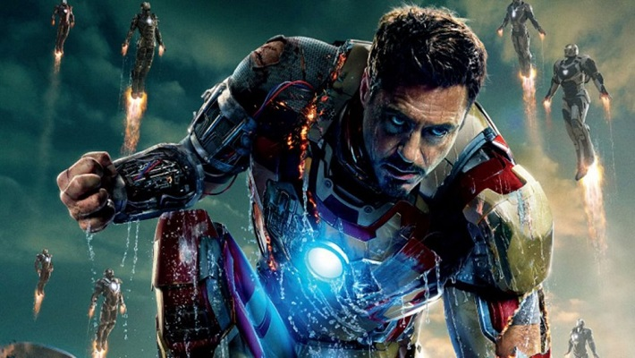

Залізна людина (Тоні Старк)
Залізна людина (англ. Iron Man), справжнє ім'я Ентоні Едвард «Тоні» Старк (англ. Anthony Edward "Tony" Stark) —
супергерой, персонаж коміксів Marvel, який вперше з'явився у 39 випуску коміксу Tales of Suspense, і був вигаданий
Стеном Лі та Джеком Кірбі.

Сили та обладнання
- Сили: у тіло Старка проник унікальний технологічний вірус «Екстреміс», який вплинув на структуру його нервової
системи. Тепер зв'язок Тоні з бронею схожий на відносини з симбіотичним організмом: Залізна людина відчуває свій
костюм кожною клітиною тіла і навіть отримав зцілюючий фактор.
- Костюм: кібернетична броня, яка наділяє суперсилою і стримуванням болю. Броня дозволяє літати, стріляти силовими
променями, забезпечує доступ до баз даних «Щ. И. Т.а» і Месників. У шолом встановлені пристрої зв'язку, сканери,
які показують, що навколо відбувається і відеокамери. На складі Старка є багато різних модифікацій броні. Усі
екземпляри можуть керуватися дистанційно.